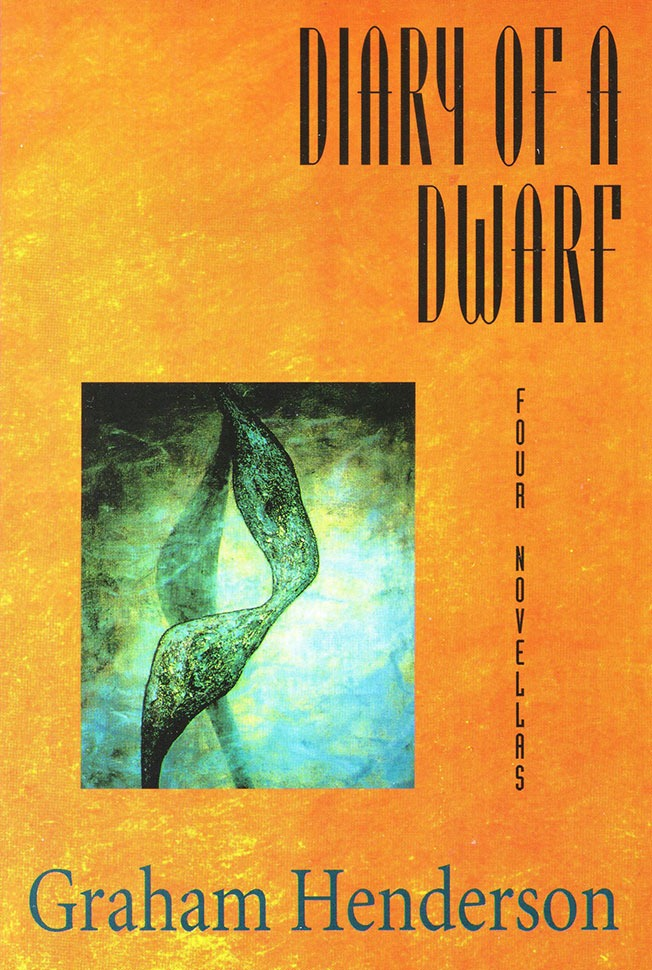

Diary of a Dwarf
Graham Henderson

Description
With his novel The Mountain Graham Henderson was recognized as ‘a new novelist of very remarkable power’ (Stephen Knight) and the novel as having ‘shimmering and magical power’ (Helen Daniel). Diary of a Dwarf extends the reach of that stunning debut. Ironmonger, the dwarf of the title novella, is an inventor of unlikely board games. Foote, of ‘Foote’s Last Stand’, is either a 117 year old neglected novelist or failed pornographer. Boot is factotum to Dr Hieronymous Bladder, a psychiatrist in improbable disguise, pursued by his patients Bones and Ophul. In these novellas Henderson takes comedic invention to its extreme; he reveals the tragic scope of the clown. ‘Nocturnal Emanations of Fish’ tells many stories in one. Story-telling is a ploy to stave off the narrator’s suicide. The ‘death of the author’ is declared from within. De Sade is a wimp, the anti-novel like Jane Austen when the demented author makes his final great plea for sanity. His control is extraordinary. ‘Fish’ alone would confirm Henderson as a radical and significant writer.
Description
With his novel The Mountain Graham Henderson was recognized as ‘a new novelist of very remarkable power’ (Stephen Knight) and the novel as having ‘shimmering and magical power’ (Helen Daniel). Diary of a Dwarf extends the reach of that stunning debut. Ironmonger, the dwarf of the title novella, is an inventor of unlikely board games. Foote, of ‘Foote’s Last Stand’, is either a 117 year old neglected novelist or failed pornographer. Boot is factotum to Dr Hieronymous Bladder, a psychiatrist in improbable disguise, pursued by his patients Bones and Ophul. In these novellas Henderson takes comedic invention to its extreme; he reveals the tragic scope of the clown. ‘Nocturnal Emanations of Fish’ tells many stories in one. Story-telling is a ploy to stave off the narrator’s suicide. The ‘death of the author’ is declared from within. De Sade is a wimp, the anti-novel like Jane Austen when the demented author makes his final great plea for sanity. His control is extraordinary. ‘Fish’ alone would confirm Henderson as a radical and significant writer.
{kind=link}
Information
| ISBN | 064624048X |
| Release | 1995 |
| Pages | 178 |
About the Author
Reviews
Australian Book Review
Reviews Fiction Shorts Kate Macdonell (academic) Australian Book Review , No. 180, May 1996 When Graham Henderson’s first novel, The Mountain , was published and subsequently short-listed for The Age Book of the Year Award in 1989, many reviewers both noted its thematic investment in the bizarre, the uncanny and the ambiguous, and commended its ambitiously self-reflexivc and polysemantic qualities. It was seen as a ‘difficult’ book - but one which was intellectually rewarding to read. Textual martyrs and masochists alike will be pleased to learn that with this collection of novellas Henderson is back in fine form. But don’t be put off if you’re not into pain. Readers who simply wish to engage with Henderson’s depictions of paranoid and schizoid subjectivities, his language games and/or his often parodic representations of the unconscious, may also find this book tempting. The novellas in this collection focus on several repulsive, impotent and incredible male characters. In ‘Diary of a Dwarf’, a self-obsessed dwarf named Ironmonger records ‘tall stories’ about his life and in ‘Boot’ the eponymous anti-hero acts as the maladroit ‘side-kick’ of Doctor Hieronymous Bladder - a man who not only has an inclination towards parapraxis and a penchant for tugging at the rubber genitalia on the ape-suit he wears, but one who also fears that two of his former patients are plotting his destruction. ‘Foote’s Last Stand’ constitutes the edited memoirs of an arguably pornographic writer, Silas Foote, and in ‘Nocturnal Emanations of Fish’ - the most compositionally experimental and compelling novella in the collection - the unnamed protagonist obsessively writes lurid stories about the many characters who cramp his bleak and murderous mind. Although ‘Boot’, for example, is somewhat tedious, the collection as a whole is worth consideration - but just remember that if you do decide to broach this host of postmodern imaginings, you’ll need to leave ‘commonsensical’ concepts like credibility and logic outside the front cover.
Muse Review
Books Robert Verdon Muse (Canberra), No. 152, June 1996 Graham Henderson’s bizarre humour reminds us of our own comicality. These novellas reek of the insane and the unrequitedly erotic. ‘Diary of a Dwarf’ is the tale of a monomaniacal midget called Ironmonger whose chief interests are voyeuristic sex and boardgames of his own devising. Prejudice against his ‘dwarfishness’ and derangement place him outside adult or even human society. As a result, he is guileful yet artless, noting in his diary that ‘in the game of life I’m a complete novice.’ Aren’t we all. ‘Boot’ explores the combative relationship between a male nurse called (curiously) Boot and a paedophilic psychiatrist named Dr Bladder, both besieged by enantiomorphic mental patients (also male). Boot creaks on in timeless subordinate confusion, while Bladder lashes out at him with professional arrogance. The result is superb satire. I winced, though, at the Goonish bits in pseudo-German (or Yiddish?) dialect: I am zee Viennese gynaecologen, Herr doktor Shtekel, at your zervice. Ach du lieber! Ich kann nicht sage mehr dann gerblunden! ‘Foote’s Last Stand’, about the podiatrically tragic past of a 117 year old writer of erotica-cum-pornography, is funnier still. A parody of literary autobiography, it will appeal to struggling novelists. Silas Foote has been writing for 80 years and published only eight books. Perhaps that is a good thing. The final offering, ‘Nocturnal Emanations of Fish’ is written in disjointed phrases separated by ellipses. Its terminal bleakness is wearying. The ‘hero’, again a mad, ageing author (one is reminded of this reviewer), is trapped in the prison-house of his own sinister words. He sentences us to many pointless labyrinthal narratives. these words all that matter ... these words ... all that keep me from suicide ... Arresting stuff, but I sometimes wonder whether we’ve come very far since the Absurdism of the 1940s.